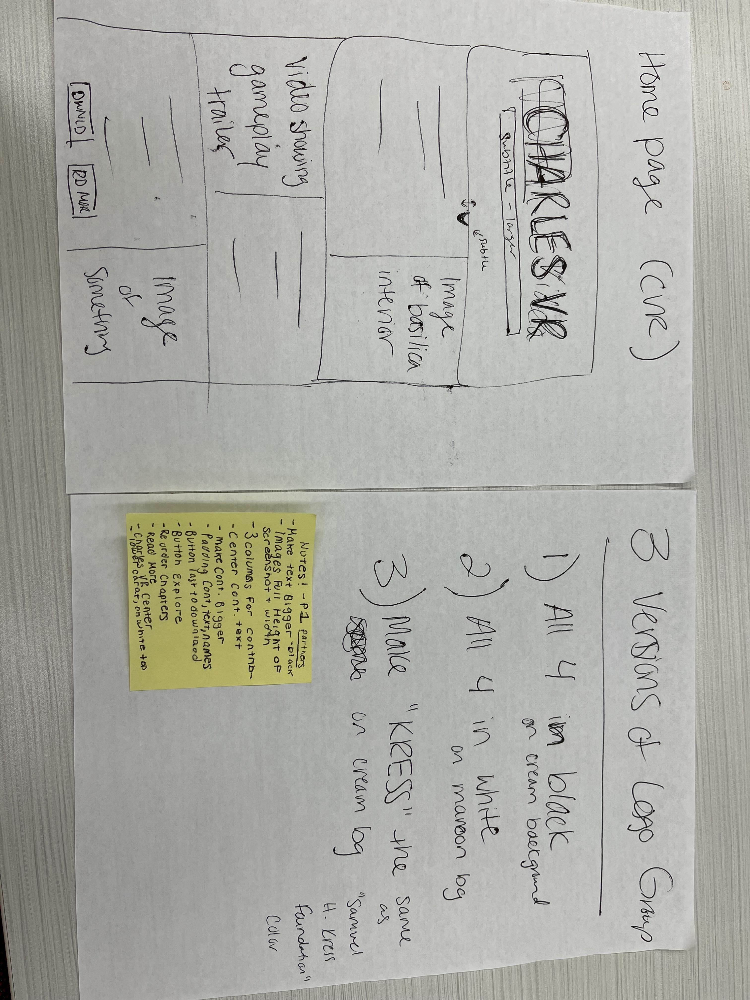

Timeline
October 2022 - Present

October 2022 - Present
UX Researcher, UX Designer, & Front-End Developer
Charles V|R is a virtual reality recreation of the coronation of Charles V. The app is supposed to be a tool to teach students about the coronation in an immersive environment. The website gives context to the coronation as well as the virtual reality experience itself
This website already existed when I joined the project. The website had been dormant for a while and needed to receive a makeover before it was officially published. I joined the project as the lead UX/UI designer and the lead Front-End Developer using the svelte Javascript framework. This was the first time I had ever used Svelte, so it was definitely a learning curve for me!
The website relies heavily on text boxes above the buttons to give context to the actions of the buttons. On my first scroll through I tried to click the text boxes and was confused when I wasn’t navigated to the next page
The demographic of the audience reading this website is students who will be going into the Charles V|R experience, so some of the vocabulary on the website may need to be defined for them
The website has very little color on it and the colors that are present are very muted, making the website feel very bland. Without these pops of color, the website doesn’t draw attention to the call to action such as the download buttons
The navigation bar is a prime example of the poor contrast on this website. Without this contrast, the readability of the website goes down significantly.
I wanted to move the website away from the black and white colors and introduce colors from the logo to add visual interest. I also implemented gradients over the backgrounds to tie together the new yellow-maroon color scheme
In this new style tile, I moved away from using Crimson Pro to opt for a more legible font being Garamond. I also shifted the color values to implement a very light cream which would be used in the color blocking schematic that provided a lot of legibility when paired with black text. The color blocking was done to mimic the colors in the logo, and how it switches from maroon text to gold text.
After solidifying the color blocking of the website, I wanted to figure out how this would be laid out for the home page. My team and I worked on some sketches to ideate how the content would be laid out on the page.
After coding out the website with the first style tile, I ran some user tests with coworkers to gather opinions on the layout. Their main concern was that the text boxes become lost in the very detailed backgrounds. Additionally, the font we used, Crimson Pro, was a little difficult to read. I went back to the drawing board to figure out how to create a layout that was cohesive, and also created a lot of contrast between the foreground and background.